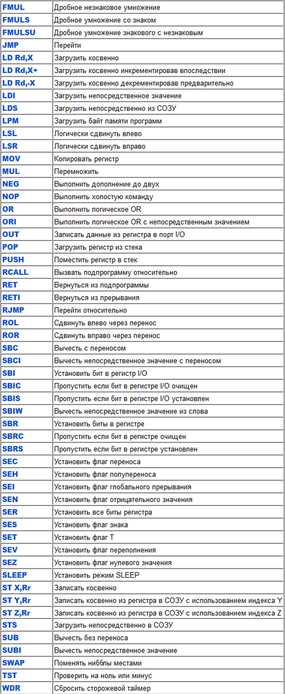
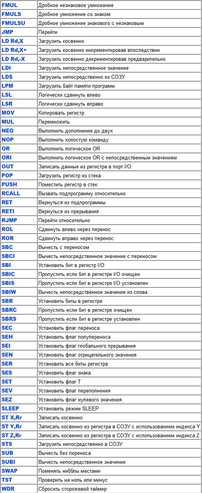
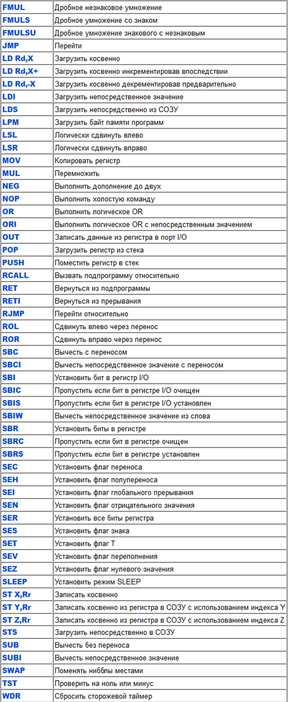

 
Про переходы и обращение к регистрам памяти
RJMP PC+(-)x - переход в программе со смещением на х строки. RJMP PC намертво зациклит программу, PC-1 переведет на предыдущую и т.д.
STS EIMSK+0x20,R16
или
OUT EIMSK,R16
Потому что когда OUT, то EIMSK=0x1d
а когда используете STS, то EIMSK должен быть 0x3d, т.е. +0x20.